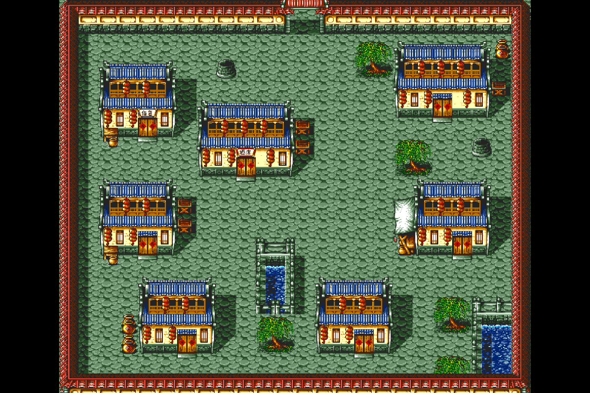

← 素材总览走出小屋 · 第一关室外三种画风
已核对出口事件：开场小屋 0106 → 城镇 0100。三版均基于这张完整室外地图重绘，点击版本可与原版对照。
招牌已加独立文字层：百貨、酒店；生成原图里的误字不再作为依据。三张都是整张地图的画风概念图，尚未适配原版图块边界。建筑细节、轮廓和个别尺寸可能有变化；道路、阻挡、出入口和水面需逐格校验后才能接入游戏。虚幻版仅指视觉质感，没有改用虚幻引擎。
原版 vs 吉卜力式手绘

原版 · 同尺寸显示 吉卜力式手绘 · 画风概念图
吉卜力式手绘 · 画风概念图打开当前版本原图 ↗ · 虚幻版提示词 · 手绘版提示词 · 像素高清版提示词 · 查看室内三种画风
使用已有平台配置的 GPT Image 2.5 图片接口，通过图片生成 CLI 制作。原版地图和游戏逻辑未替换。素材另存入 CMS「水浒传素材重构」。